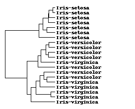

This is documentation for Orange 2.7. For the latest documentation, see Orange 3.
Hierarchical clustering (hierarchical)¶
The following example show clustering of the Iris data, with distance matrix computed with the Orange.distance.Euclidean distance measure and cluster it with average linkage.
import Orange
iris = Orange.data.Table("iris")
matrix = Orange.misc.SymMatrix(len(iris))
matrix = Orange.distance.distance_matrix(iris, Orange.distance.Euclidean)
clustering = Orange.clustering.hierarchical.HierarchicalClustering()
clustering.linkage = Orange.clustering.hierarchical.AVERAGE
root = clustering(matrix)
root.mapping.objects = iris
Data instances belonging to the top-most four clusters (obtained with top_clusters) could be printed out with:
topmost = sorted(Orange.clustering.hierarchical.top_clusters(root, 4), key=len)
for n, cluster in enumerate(topmost):
print "\n\n Cluster %i \n" % n
for instance in cluster:
print instance
It could be more informative to print out the class distributions for each cluster.
for cluster in topmost:
dist = Orange.statistics.distribution.Distribution(iris.domain.class_var, \
[ ex for ex in cluster ])
for e, d in enumerate(dist):
print "%s: %3.0f " % (iris.domain.class_var.values[e], d),
print
Here is the output.
Iris-setosa: 0 Iris-versicolor: 50 Iris-virginica: 17
Iris-setosa: 49 Iris-versicolor: 0 Iris-virginica: 0
Iris-setosa: 0 Iris-versicolor: 0 Iris-virginica: 33
Iris-setosa: 1 Iris-versicolor: 0 Iris-virginica: 0
The same results could also be obtained with:
import Orange
iris = Orange.data.Table("iris")
root = Orange.clustering.hierarchical.clustering(iris,
distance_constructor=Orange.distance.Euclidean,
linkage=Orange.clustering.hierarchical.AVERAGE)
Basic functionality¶
- Orange.clustering.hierarchical.clustering(data, distance_constructor=<type 'Orange.distance.Euclidean'>, linkage=Average, order=False, progress_callback=None)¶
Return a hierarchical clustering of the instances in a data set. The method works in approximately O(n2) time (with the worst case O(n3)).
Parameters: - data (Orange.data.Table) – Input data table for clustering.
- distance_constructor (Orange.distance.DistanceConstructor) – Instance distance constructor
- linkage (int) –
Linkage flag. Must be one of module level flags:
- order (bool) – If True run order_leaves on the resulting clustering.
- progress_callback (function) – A function (taking one argument) to use for reporting the on the progress.
Return type:
- class Orange.clustering.hierarchical.HierarchicalClustering¶
-
- overwrite_matrix¶
If True (default is False), the algorithm will save memory by working on the original distance matrix, destroying it in the process.
- progress_callback¶
A callback function (None by default), which will be called 101 times. The function only gets called if the number of objects is at least 1000.
- __call__(matrix)¶
Return an instance of HierarchicalCluster representing the root of the hierarchy (instance of HierarchicalCluster).
The distance matrix has to contain no negative elements, as this helps the algorithm to run faster. The elements on the diagonal are ignored. The method works in approximately O(n2) time (with the worst case O(n3)).
Parameters: matrix (Orange.misc.SymMatrix) – A distance matrix to perform the clustering on.
Linkage methods
- Orange.clustering.hierarchical.SINGLE¶
- Distance between groups is defined as the distance between the closest
- pair of objects, one from each group.
- Orange.clustering.hierarchical.AVERAGE¶
Distance between two clusters is defined as the average of distances between all pairs of objects, where each pair is made up of one object from each group.
- Orange.clustering.hierarchical.COMPLETE¶
Distance between groups is defined as the distance between the most distant pair of objects, one from each group. Complete linkage is also called farthest neighbor.
- Orange.clustering.hierarchical.WARD¶
Ward’s distance.
Drawing¶
- Orange.clustering.hierarchical.dendrogram_draw(file, cluster, attr_cluster=None, labels=None, data=None, width=None, height=None, tree_height=None, heatmap_width=None, text_width=None, spacing=2, cluster_colors={}, color_palette=ColorPalette([(255, 0, 0), (0, 255, 0)]), maxv=None, minv=None, gamma=None, format=None)¶
Plot the dendrogram to file.
Parameters: - file (str or an file-like object suitable for writing.) – An open file or a filename to store the image to. The output format is chosen according to the extension. Supported formats: PNG, EPS, SVG.
- cluster (HierarcicalCluster) – An instance of HierarcicalCluster
- attr_cluster (HierarcicalCluster) – An instance of HierarcicalCluster for the attributes in data (unused if data is not supplied)
- labels (list-of-strings) – Labels for the cluster leaves.
- data (Orange.data.Table) – A data table for the (optional) heatmap.
- width (int) – Image width.
- height (int) – Image height.
- tree_height (int) – Dendrogram tree height in the image.
- heatmap_width (int) – Heatmap width.
- text_width (int) – Text labels area width.
- spacing (int) – Spacing between consecutive leaves.
- cluster_colors (dict) – A dictionary mapping HierarcicalCluster instances in cluster to a RGB color 3-tuple.
- format (str) – Output image format Currently supported formats are “png” (default), “eps” and “svg”. You only need this arguement if the format cannot be deduced from the file argument.
Example
The following scripts clusters a subset of 20 instances from the Iris data set. The leaves are labelled with the class value.
import Orange
data = Orange.data.Table("iris")
sample = data.select(Orange.data.sample.SubsetIndices2(data, 20), 0)
root = Orange.clustering.hierarchical.clustering(sample)
labels = [str(d.get_class()) for d in sample]
Orange.clustering.hierarchical.dendrogram_draw(
"hclust-dendrogram.png", root, labels=labels)
The resulting dendrogram is shown below.
The following code, that produces the dendrogram below, also colors the three topmost branches and represents attribute values with a custom color schema, (spanning red - black - green with custom gamma minv and maxv).
my_colors = [(255,0,0), (0,255,0), (0,0,255)]
top_clusters = Orange.clustering.hierarchical.top_clusters(root, 3)
colors = dict([(cl, col) for cl, col in zip(top_clusters, my_colors)])
Orange.clustering.hierarchical.dendrogram_draw(
"hclust-colored-dendrogram.png", root, data=sample, labels=labels,
cluster_colors=colors, color_palette=[(0,255,0), (0,0,0), (255,0,0)],
gamma=0.5, minv=2.0, maxv=7.0)
Cluster analysis¶
- Orange.clustering.hierarchical.cluster_to_list(node, prune=None)¶
Return a list of clusters down from the node of hierarchical clustering.
Parameters: - node (int or NoneType) – Cluster node.
- prune – If not None it must be a positive integer. Any cluster with less then prune items will be left out of the list.
Return type: list of HierarchicalCluster instances
- Orange.clustering.hierarchical.top_clusters(root, k)¶
Return k topmost clusters from hierarchical clustering.
Parameters: - root (HierarchicalCluster) – Root cluster.
- k (int) – Number of top clusters.
Return type: list of HierarchicalCluster instances
- Orange.clustering.hierarchical.top_cluster_membership(root, k)¶
Return data instances’ cluster membership (list of indices) to k topmost clusters.
Parameters: - root (HierarchicalCluster) – Root cluster.
- k (int) – Number of top clusters.
Return type: list-of-int
- Orange.clustering.hierarchical.order_leaves(tree, matrix, progress_callback=None)¶
Matplotlib dendrogram ploting. This is mostly untested, use dendrogram_draw funciton instead of this.
- Orange.clustering.hierarchical.postorder(cluster)¶
Return a post order list of clusters.
Parameters: cluster (HierarchicalCluster) – Cluster Return type: list of HierarchicalCluster instances
- Orange.clustering.hierarchical.preorder(cluster)¶
Return a pre order list of clusters.
Parameters: cluster (HierarchicalCluster) – Cluster Return type: list of HierarchicalCluster instances
- Orange.clustering.hierarchical.prune(cluster, level=None, height=None, condition=None)¶
Prune the clustering instance cluster in place.
Parameters: - cluster (HierarchicalCluster) – Cluster to prune.
- level (int) – If not None prune all clusters deeper then level.
- height (float) – If not None prune all clusters with height lower then height.
- condition (function) – If not None condition must be a function taking a single HierarchicalCluster instance and returning a True or False value indicating if the cluster should be pruned.
- Orange.clustering.hierarchical.pruned(cluster, level=None, height=None, condition=None)¶
Return a new pruned clustering instance. It uses clone to create a copy of the cluster instance.
Parameters: - cluster (HierarchicalCluster) – Cluster to prune.
- level (int) – If not None prune all clusters deeper then level.
- height (float) – If not None prune all clusters with height lower then height.
- condition (function) – If not None condition must be a function taking a single HierarchicalCluster instance and returning a True or False value indicating if the cluster should be pruned.
Return type:
- Orange.clustering.hierarchical.clone(cluster)¶
Clone a cluster, including it’s subclusters.
Parameters: cluster (HierarchicalCluster) – Cluster to clone Return type: HierarchicalCluster
- Orange.clustering.hierarchical.cluster_depths(cluster)¶
Return a dictionary mapping HierarchicalCluster instances to their depths in the cluster hierarchy.
Parameters: cluster (HierarchicalCluster) – Root cluster Return type: class:dict
- Orange.clustering.hierarchical.cophenetic_distances(cluster)¶
Return the cophenetic distance matrix between items in clustering. Cophenetic distance is defined as the height of the cluster where the two items are first joined.
Parameters: cluster (HierarchicalCluster) – Clustering. Return type: Orange.misc.SymMatrix
- Orange.clustering.hierarchical.cophenetic_correlation(cluster, matrix)¶
Return the cophenetic correlation coefficient of the given clustering.
Parameters: - cluster (HierarchicalCluster) – Clustering.
- matrix – The distance matrix from which the cluster was derived.
Return type:
- Orange.clustering.hierarchical.joining_cluster(cluster, item1, item2)¶
Return the cluster where item1 and item2 are first joined
Parameters: - cluster (HierarchicalCluster) – Clustering.
- item1 – An element of cluster.mapping or cluster.mapping.objects
- item2 – An element of cluster.mapping or cluster.mapping.objects
Return type:
HierarchicalCluster hierarchy¶
Results of clustering are stored in a hierarchy of HierarchicalCluster objects.
- class Orange.clustering.hierarchical.HierarchicalCluster¶
A node in the clustering tree, as returned by HierarchicalClustering.
- branches¶
A list of sub-clusters (HierarchicalCluster instances). If this is a leaf node this attribute is None
- left¶
The left sub-cluster (defined only if there are only two branches). Same as branches[0].
- right¶
The right sub-cluster (defined only if there are only two branches). Same as branches[1].
- height¶
Height of the cluster (distance between the sub-clusters).
- mapping¶
A list of indices to the original distance matrix. It is the same for all clusters in the hierarchy - it simply represents the indices ordered according to the clustering.
- mapping.objects¶
A sequence describing objects - an Orange.data.Table, a list of instance, a list of features (when clustering features), or even a string of the same length as the number of elements. If objects are given, the cluster’s elements, as got by indexing or interacion, are not indices but corresponding objects. It we put an Orange.data.Table into objects, root.left[-1] is the last instance of the first left cluster.
- first¶
- last¶
first and last are indices into the elements of mapping that belong to that cluster.
- __len__()¶
Asking for the length of the cluster gives the number of the objects belonging to it. This equals last - first.
- __getitem__(index)¶
By indexing the cluster we address its elements; these are either indices or objects. For instance cluster[2] gives the third element of the cluster, and list(cluster) will return the cluster elements as a list. The cluster elements are read-only.
- swap()¶
Swaps the left and the right subcluster; it will report an error when the cluster has more than two subclusters. This function changes the mapping and first and last of all clusters below this one and thus needs O(len(cluster)) time.
- permute(permutation)¶
Permutes the subclusters. Permutation gives the order in which the subclusters will be arranged. As for swap, this function changes the mapping and first and last of all clusters below this one.
Subclusters are ordered so that cluster.left.last always equals cluster.right.first or, in general, cluster.branches[i].last equals cluster.branches[i+1].first.
Swapping and permutation change the order of elements in branches, permute the corresponding regions in mapping and adjust the first and last for all the clusters below.
An example
The following example constructs a simple distance matrix and runs clustering on it.
>>> import Orange
>>> m = [[],
... [ 3],
... [ 2, 4],
... [17, 5, 4],
... [ 2, 8, 3, 8],
... [ 7, 5, 10, 11, 2],
... [ 8, 4, 1, 5, 11, 13],
... [ 4, 7, 12, 8, 10, 1, 5],
... [13, 9, 14, 15, 7, 8, 4, 6],
... [12, 10, 11, 15, 2, 5, 7, 3, 1]]
>>> matrix = Orange.misc.SymMatrix(m)
>>> root = Orange.clustering.hierarchical.HierarchicalClustering(matrix,
... linkage=Orange.clustering.hierarchical.AVERAGE)
root is the root of the cluster hierarchy. We can print it with a simple recursive function.
>>> def print_clustering(cluster):
... if cluster.branches:
... return "(%s %s)" % (print_clustering(cluster.left), print_clustering(cluster.right))
... else:
... return str(cluster[0])
The clustering looks like
>>> print_clustering(root)
'(((0 4) ((5 7) (8 9))) ((1 (2 6)) 3))'
The elements form two groups, the first with elements 0, 4, 5, 7, 8, 9, and the second with 1, 2, 6, 3. The difference between them equals to
>>> print root.height
9.0
The first cluster is further divided onto 0 and 4 in one, and 5, 7, 8, 9 in the other subcluster.
The following code prints the left subcluster of root.
>>> for el in root.left:
... print el,
0 4 5 7 8 9
Object descriptions can be added with
>>> root.mapping.objects = ["Ann", "Bob", "Curt", "Danny", "Eve",
... "Fred", "Greg", "Hue", "Ivy", "Jon"]
As before, let us print out the elements of the first left cluster
>>> for el in root.left:
... print el,
Ann Eve Fred Hue Ivy Jon
Calling root.left.swap reverses the order of subclusters of root.left
>>> print_clustering(root)
'(((Ann Eve) ((Fred Hue) (Ivy Jon))) ((Bob (Curt Greg)) Danny))'
>>> root.left.swap()
>>> print_clustering(root)
'((((Fred Hue) (Ivy Jon)) (Ann Eve)) ((Bob (Curt Greg)) Danny))'
Let us write function for cluster pruning.
>>> def prune(cluster, h):
... if cluster.branches:
... if cluster.height < h:
... cluster.branches = None
... else:
... for branch in cluster.branches:
... prune(branch, h)
Here we need a function that can plot leafs with multiple elements.
>>> def print_clustering2(cluster):
... if cluster.branches:
... return "(%s %s)" % (print_clustering2(cluster.left), print_clustering2(cluster.right))
... else:
... return str(tuple(cluster))
Four clusters remain.
>>> prune(root, 5)
>>> print print_clustering2(root)
(((('Fred', 'Hue') ('Ivy', 'Jon')) ('Ann', 'Eve')) ('Bob', 'Curt', 'Greg', 'Danny'))
The following function returns a list of lists.
>>> def list_of_clusters0(cluster, alist):
... if not cluster.branches:
... alist.append(list(cluster))
... else:
... for branch in cluster.branches:
... list_of_clusters0(branch, alist)
...
>>> def list_of_clusters(root):
... l = []
... list_of_clusters0(root, l)
... return l
The function returns a list of lists, in our case
>>> list_of_clusters(root)
[['Fred', 'Hue'], ['Ivy', 'Jon'], ['Ann', 'Eve'], ['Bob', 'Curt', 'Greg', 'Danny']]
If objects were not defined the list would contains indices instead of names.
>>> root.mapping.objects = None
>>> print list_of_clusters(root)
[[5, 7], [8, 9], [0, 4], [1, 2, 6, 3]]
Utility Functions¶
- Orange.clustering.hierarchical.clustering_features(data, distance=None, linkage=Average, order=False, progress_callback=None)¶
Return hierarchical clustering of attributes in a data set.
Parameters: - data (Orange.data.Table) – Input data table for clustering.
- distance – Attribute distance constructor (currently not used).
- linkage (int) –
Linkage flag; one of global module level flags:
- SINGLE
- AVERAGE
- COMPLETE
- WARD
- order (bool) – If True run order_leaves on the resulting clustering.
- progress_callback (function) – A function (taking one argument) to use for reporting the on the progress.
Return type:
- Orange.clustering.hierarchical.feature_distance_matrix(data, distance=None, progress_callback=None)¶
A helper function that computes an Orange.misc.SymMatrix of all pairwise distances between features in data.
Parameters: - data (Orange.data.Table) – A data table
- distance (function) – a function taking two lists and returning the distance.
- progress_callback (function) – A function (taking one argument) to use for reporting the on the progress.
Return type:
- Orange.clustering.hierarchical.dendrogram_layout(cluster, expand_leaves=False)¶
Return a layout of the cluster dendrogram on a 2D plane. The return value if a list of (subcluster, (start, center, end)) tuples where subcluster is an instance of HierarchicalCluster and start, end are the two end points for the cluster branch. The list is sorted in post-order.
Parameters: - cluster (HierarchicalCluster) – Cluster to layout.
- expand_leaves – If True leaves will span proportional to the number of items they contain, else all leaves will be the same width.
Return type: list of (HierarchicalCluster, (start, center, end)) tuples